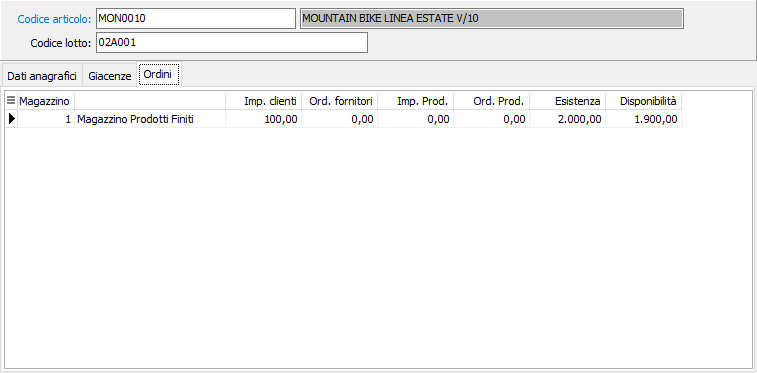

Ordini
La sezione presenta, per il lotto in esame, i valori di impegnato cliente, ordinato a fornitori, esistenza e disponibilità, quest'ultime relative all'esercizio corrente, per ciascuno dei vari magazzini gestiti.
I valori presentati nei vari campi non sono modificabili da parte dell’utente, in quanto generati dai documenti.

IMPEGNATO DA CLIENTI: campo gestito automaticamente dai programmi di magazzino e di gestione ordini clienti. È la quantità impegnata per ordini dai clienti e non ancora spedita.
ORDINATO A FORNITORE: campo gestito automaticamente dai programmi di magazzino e di gestione ordini fornitori. È la quantità ordinata ai fornitori e non ancora pervenuta.
IMPEGNATO DA PRODUZIONE: campo gestito automaticamente dai programmi di magazzino e di gestione della produzione. È la quantità impegnata per disposizioni di produzione e non ancora rientrata.
ORDINATO A PRODUZIONE: campo gestito automaticamente dai programmi di magazzino e di gestione della produzione. È la quantità ordinata a produzione e non ancora rientrata.
ESISTENZA: campo gestito automaticamente dai programmi di magazzino e di gestione della produzione. È la quantità presente nel magazzino nell'esercizio corrente.
DISPONIBILITÀ: campo derivato dai progressivi di magazzino, calcolato come esistenza + ordinato - impegnato. È relativa all'esercizio corrente.